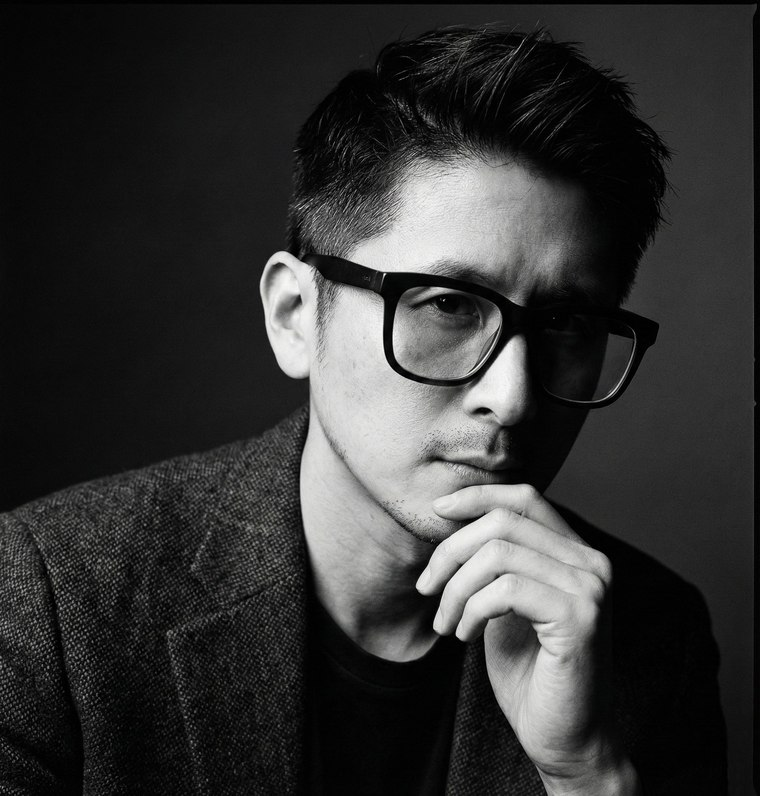
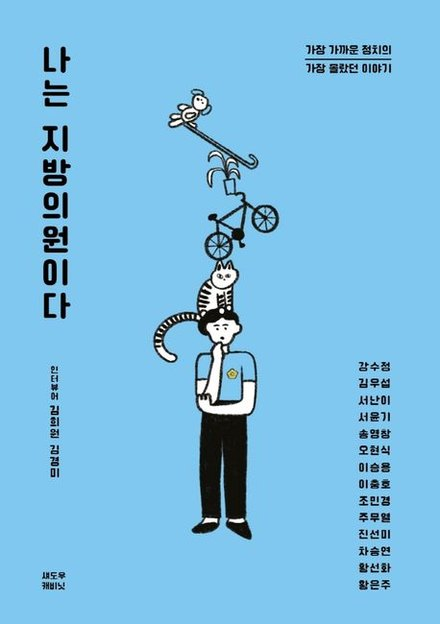
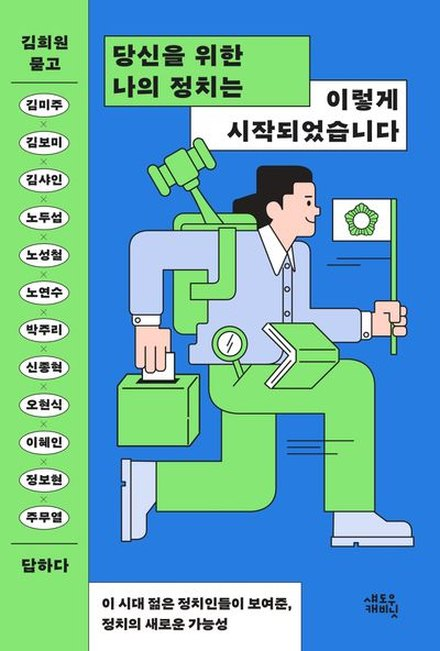
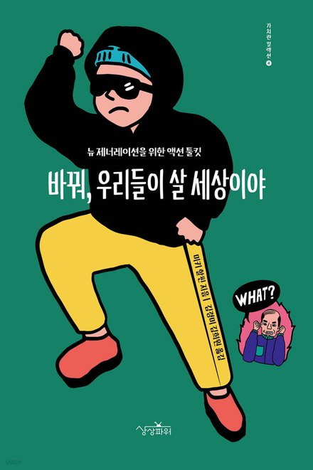

더넥스트제너레이션즈 / 소개

김희원더넥스트제너레이션즈 대표
사람 안에 있는 가능성을 발견하고 그 가능성이 세상을 바꾸는 힘이 되도록 돕습니다. 비즈니스와 정책, 정치를 아우르며 그 일을 합니다.
경희대 공공대학원 정책학과 석사과정저서 2권 · 역서 1권KIAT 등 정책연구 6건
경희대학교 포스트모던음악학과에 예체능계 수석으로 입학했습니다. 4년 내내 전액 장학금을 받으며 스스로 특별한 사람이라고 생각했습니다.
그런데 음악은, 예술은 성적순이 아니었습니다. 부족한 저의 모습을 발견하게 되었습니다. 저의 부족함이 보일 때 비로소 다른 사람의 잘함이 보이기 시작했습니다.
제가 정말 잘하는 일은 곡을 쓰는 일이 아니었습니다. 사람들 안에 있는 가능성을 발견하고 그 가능성이 밖으로 나오도록 이끄는 일이었습니다. 그걸 깨달은 뒤 저만의 길을 걷기 시작했습니다.
청년들이 모여 서로의 가능성을 꺼내는 커뮤니티를 함께 만들고 이끌었습니다.
사회문제를 비즈니스로 풀었습니다. 지역 커뮤니티 공간을 운영하고 혁신교육·1인 가구 돌봄·공동주택 사업을 만들었습니다.
사회문제를 정책으로 풀었습니다. 청년 미디어를 만들고 청년정책 네트워크와 지역 일자리 사업을 이끌었습니다.
비즈니스와 정책과 정치를 잇는 일을 했습니다. 정책 연구를 수행하고 전국의 지방의원을 만나 워크숍을 열었으며 두 권의 책을 썼습니다.
자리는 바뀌었지만 질문은 하나였습니다.
사람 안의 가능성은 어떻게 세상을 바꾸는 힘이 될까.
이 시대에 변화를 만들기 위해서는 이 넷을 함께 다루어야 합니다.
하나를 잘 아는 사람은 많습니다.
넷을 함께 아는 사람은 드뭅니다.
전국의 지방의원을 만나고 미래세대 정치인을 인터뷰하며 같은 장면을 여러 번 봤습니다. 좋은 사람이 정치에 들어와도 혼자서는 그 가능성을 다 펼치기 어렵다는 것입니다.
보좌진 없이 일하는 의원은 일을 하고도 기록할 시간이 없습니다. 기록이 없으면 다음 선거에서 보여드릴 것이 없고 다음 단계로 나아가기도 어렵습니다.
우리의 미래는 우리의 힘으로!
그래서 2025년 11월 미래세대 문제해결을 위한 통합 플랫폼 더넥스트제너레이션즈를 세웠습니다. 진단하고 가르치고 직접 만듭니다.
설계 「한 장의 목차」 · 기록 「한 해의 기록」 · 출판 「한 권의 정치」. 의원의 일이 기록이 되고 기록이 이야기가 되도록 돕습니다.
시리즈 보기 → POLI CODE16가지 유형으로 의원마다 다른 강점을 찾습니다. 모든 설계는 그 사람에게서 시작합니다.
진단해 보기 → CIVIC TECH정치적 신뢰를 시민 참여 구조로 옮기는 플랫폼. 한국판과 미국판을 직접 만들고 있습니다.
살펴보기 →사람 안의 가능성을 꺼내는 일.
이제 그 일을 다음 세대와 함께 합니다.

나는 지방의원이다2022 · 대표저자
당신을 위한 나의 정치는
바꿔, 우리들이 살 세상이야2024 · 공역강연과 워크숍 정책 연구 그리고 의정 기록 시리즈까지 무엇이든 편하게 연락 주십시오.
통화가 어려우시면 문자나 메일을 남겨 주셔도 됩니다.